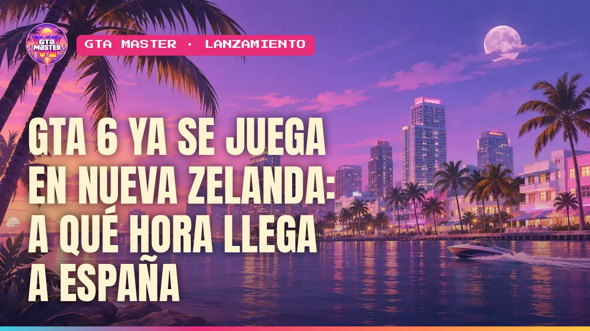

Lanzamiento
Lanzamiento
GTA 6 ya se juega en Nueva Zelanda: a qué hora llega a España y Latinoamérica

GTA 6 se desbloquea a medianoche hora local en cada país. Nueva Zelanda abrió la veda a las 12:00 hora peninsular; en España llega a las 00:00 del 19 de noviembre.
Ya está pasando. Desde las 12:00 de hoy, hora peninsular, hay gente jugando a Grand Theft Auto VI. No es una filtración ni una copia pirata: es Nueva Zelanda, el primer país del mundo donde ya es 19 de noviembre.
Rockstar no ha optado por un lanzamiento simultáneo en todo el planeta. Según recoge Playday, el estudio confirmó que el juego se desbloquea a medianoche, hora local, tanto en PlayStation 5 como en Xbox Series X|S. El resultado es una ola que recorre el mapa durante casi un día entero.
La medianoche que da la vuelta al mundo
La medianoche del 19 de noviembre en Nueva Zelanda equivale a las 11:00 UTC del 18. A partir de ahí, God is a Geek cuenta 15 ventanas de desbloqueo distintas a lo largo de unas 19 horas, sacadas de las fichas de PlayStation Store de 63 países y regiones.
| Región | Hora local | Hora peninsular española |
|---|---|---|
| Nueva Zelanda | 00:00 del 19 nov | 12:00 del 18 nov |
| Australia (Sídney) | 00:00 del 19 nov | 14:00 del 18 nov |
| España peninsular y Europa continental | 00:00 del 19 nov | 00:00 del 19 nov |
| Reino Unido e Irlanda | 00:00 del 19 nov | 01:00 del 19 nov |
| Estados Unidos y Canadá | 00:00 (hora del Este) del 19 nov | 06:00 del 19 nov |
| México y Centroamérica | 00:00 del 19 nov | 07:00 del 19 nov |
En Estados Unidos y Canadá todo el país comparte una única ventana a la medianoche de la costa este, así que en la costa oeste el juego llega a las nueve de la noche del día 18, como explica Kotaku. México y Centroamérica cierran el despliegue. En el resto de Latinoamérica, la regla es la misma: medianoche del 19 en tu hora local.
¿Y el truco de Nueva Zelanda?
Es la pregunta del día. En Xbox, cambiar la región de la consola a Nueva Zelanda y comprar o precargar el juego en esa tienda permite desbloquearlo a las 11:00 UTC del 18, según Gadget Review. En PlayStation la cosa cambia: lo que manda es la región de tu cuenta de PSN, no el reloj de la consola. GTABoom avisa de que no hay un truco universal y recomienda mirar la hora que aparece en tu propio pedido antes de dar nada por hecho.
Si juegas desde Canarias, comprueba la ficha de tu tienda: el desbloqueo depende de la región de la cuenta, no de dónde estés.
Cuidado con los spoilers
Hay un efecto secundario que conviene tener presente. Con 19 horas entre el primer y el último desbloqueo, Kotaku advierte de que los spoilers van a circular durante horas antes de que media América pueda jugar. Si quieres llegar limpio a Leonida, hoy es buen día para silenciar palabras en redes.
Mientras llega la medianoche, repasa los tráileres oficiales:
Y si quieres llegar con los deberes hechos, en el canal tenemos los 10 detalles que casi nadie vio en la mirada extendida.


Comentarios
Los comentarios funcionan con Disqus: puedes entrar con Google, Facebook, X o tu email. Al pulsar el botón se conecta con Disqus, que usa sus propias cookies. Más información en nuestra política de privacidad.